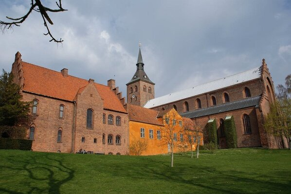
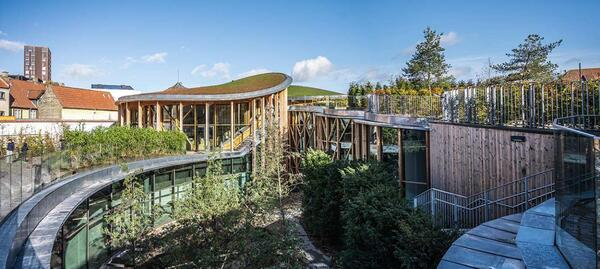
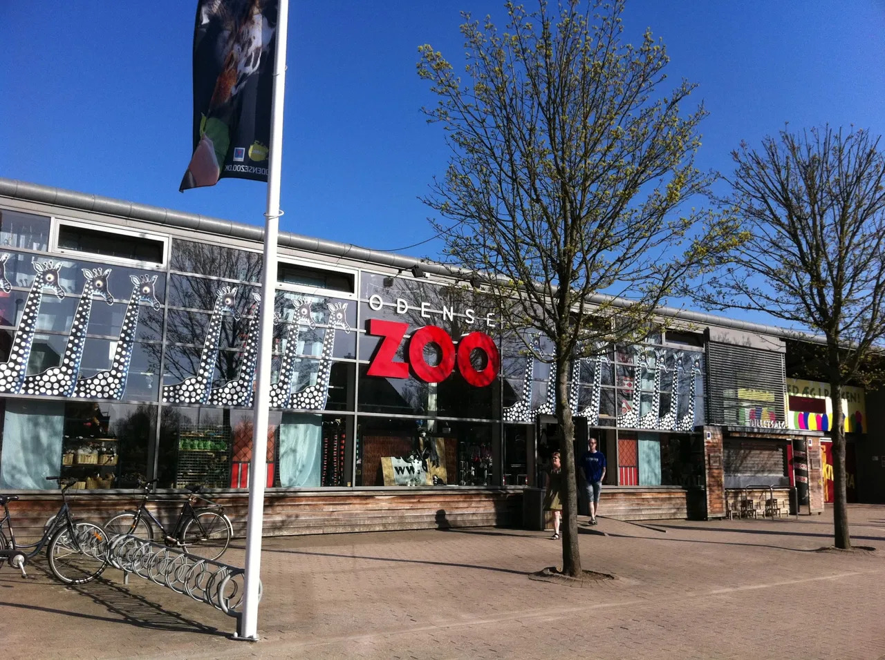
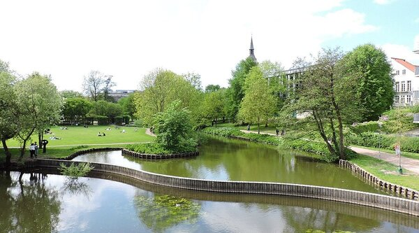
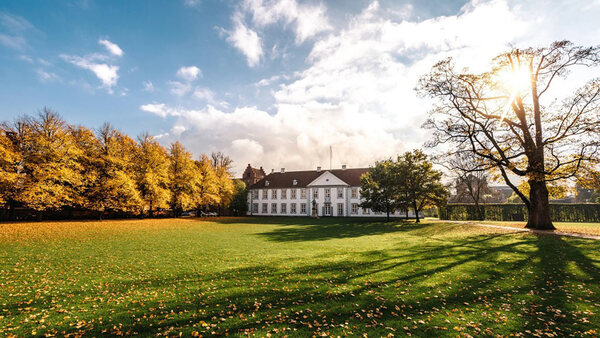
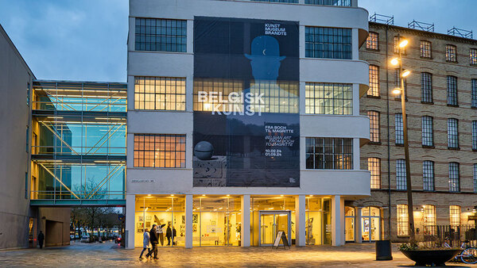
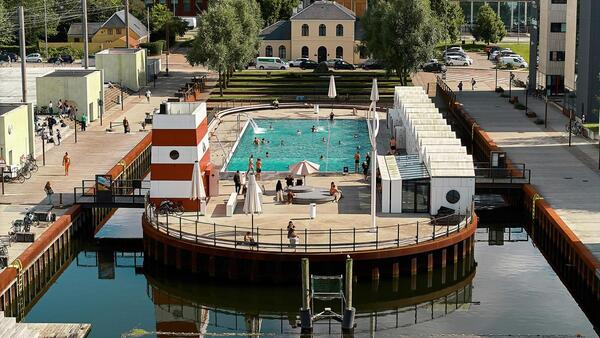
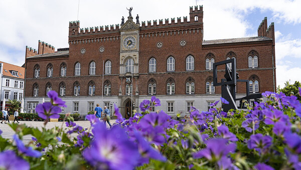

Multimédia
Nesta página irá encontrar algumas fotos, um vídeo e ainda um poema acerca de Odense.
Fotografias








Video
Poesia
Odense
No leito manso do teu rio,
dorme a memória de um menino
que sonhou patos, gelo e frio,
e fez do mundo um livro fino.
Entre torres de tijolo antigo
e vidro novo a reluzir,
caminha a ciência lado a lado
com o silêncio a persistir.
Cidade que não grita, ensina,
que cresce devagar, sem pressa,
onde o passado se ilumina
na luz do norte que atravessa.